TURMA DO IZAAC · INSCRIÇÕES ETERNAMENTE ABERTAS
Izaac, isso já é
pós-graduação.
Uma apresentação de 45 páginas sobre o Scaramouche.
Essa dedicação merecia um campus só seu.
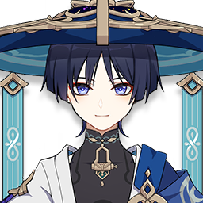
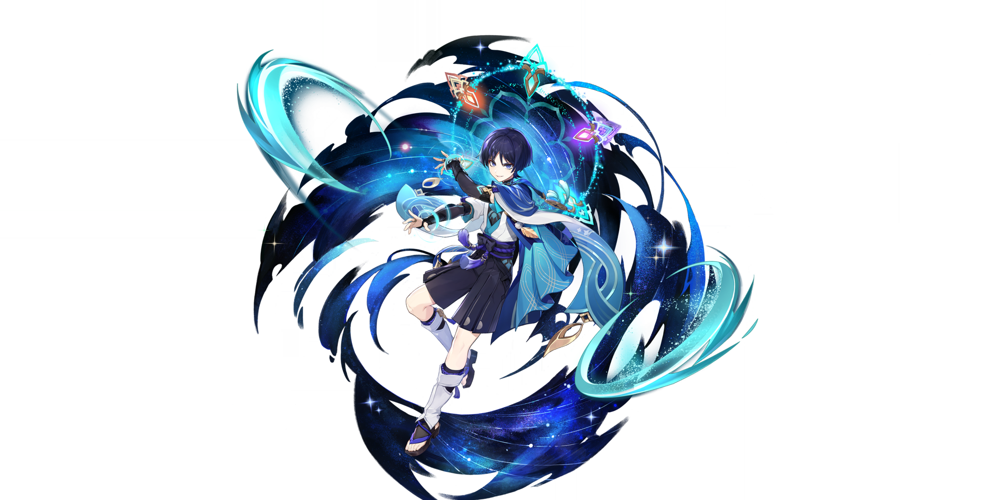
SEMPRE FOI.
Isso é dedicação.↙
01 / COMO NASCE UMA UNIVERSIDADE DE MEME
Um personagem.
Muita dedicação.
Izaac gosta tanto do Scaramouche que fez uma apresentação de 45 páginas para contar a lore dele aos amigos.
Uma dedicação dessas merece uma homenagem à altura. E um diploma de Scaramouchologia, obviamente.
Se gostar de um personagem fosse curso,
isso aqui já dava pós-graduação.
02 / CAMPUS DO IZAAC
Scara por
todos os lados.
15 GIFs. Nenhuma intenção de superar esse personagem.
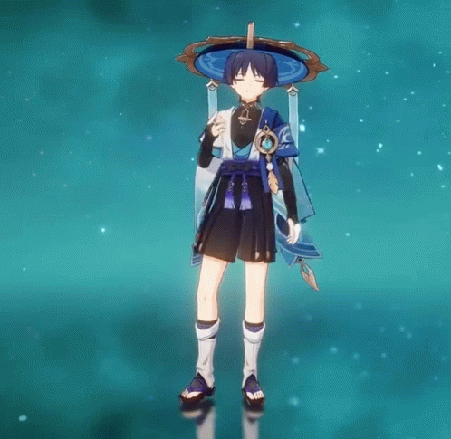
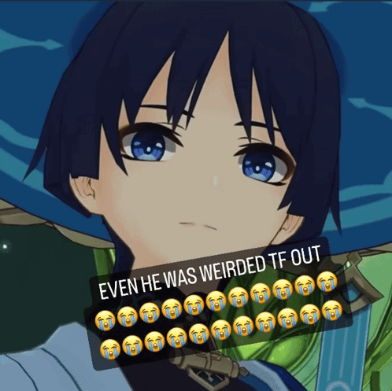
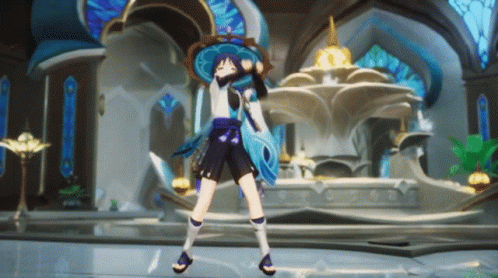
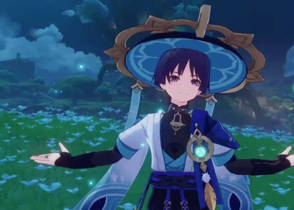
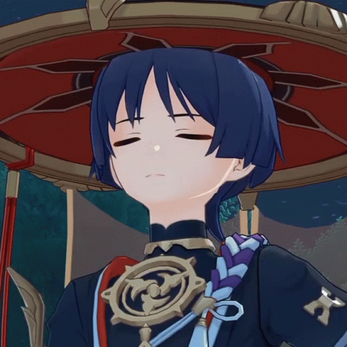
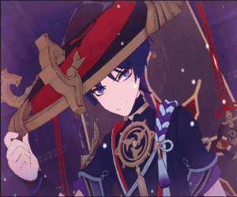
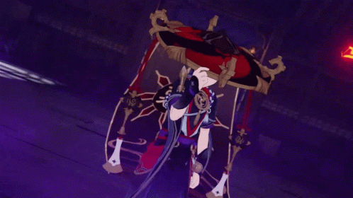
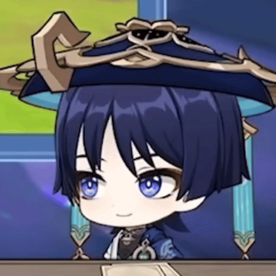
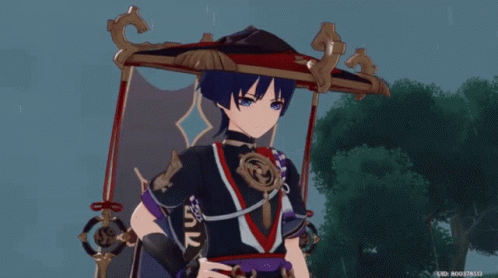
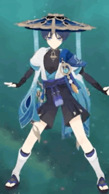
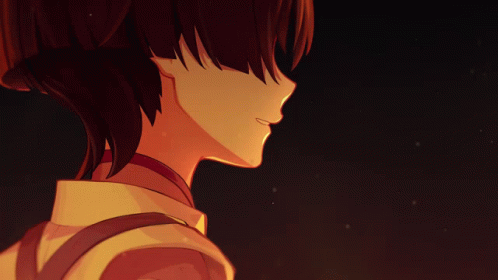
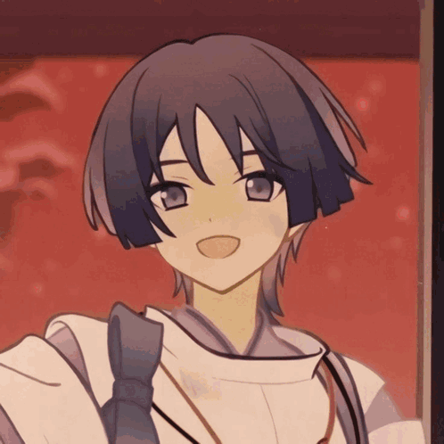
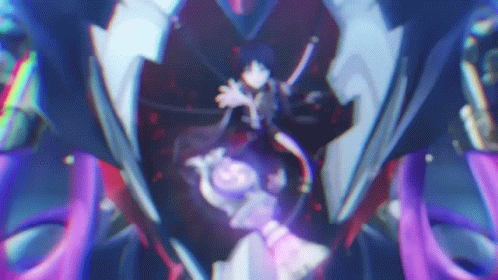
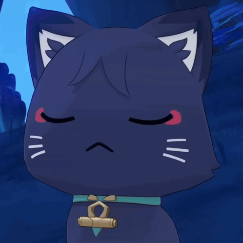
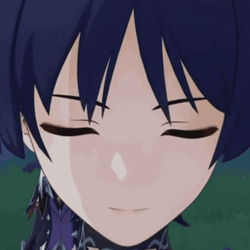
O ÁLBUM DO CAMPUS · 10 FOTOS
Não coube só nos GIFs. ♡
03 / VESTIBULAR DO CHAPÉU
Você prestou
atenção mesmo?
Seis questões. O vestibular mais Scara da sua vida.
Quatro acertos e o diploma é seu.
04 / COM TODO O CARINHO
pra você, zac.
zac, achei muito fofinho você ter feito 45 slides só pra falar de um personagem que você gosta KKKKKKKKKKKKKK ,é muito bonitinho ver alguém falando com tanto carinho e empolgação sobre algo que ama, e voce mostrou isso muito bem!! dá pra ver o quanto esse personagem é especial pra você, e eu acho muito lindo você querer compartilhar isso com a gente. nunca perca esse jeitinho, td bem? te amo <3